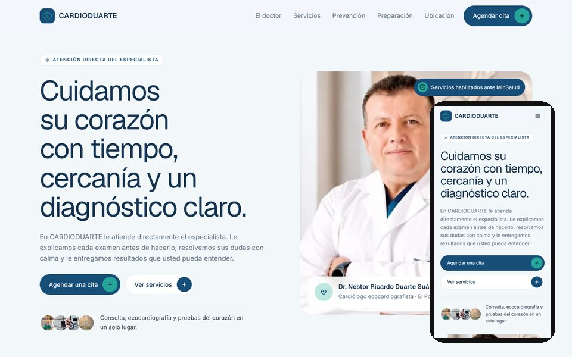

Clínica moderna y profesional
Clara, ordenada y actual. Transmite confianza y tecnología, con el doctor como protagonista desde la portada.
- Se destaca
- Servicios en tarjetas con foto, cifras del consultorio y un cierre con la marca en grande.
- Ideal si
- Quiere una imagen de clínica moderna, limpia y fácil de recorrer.
- Colores